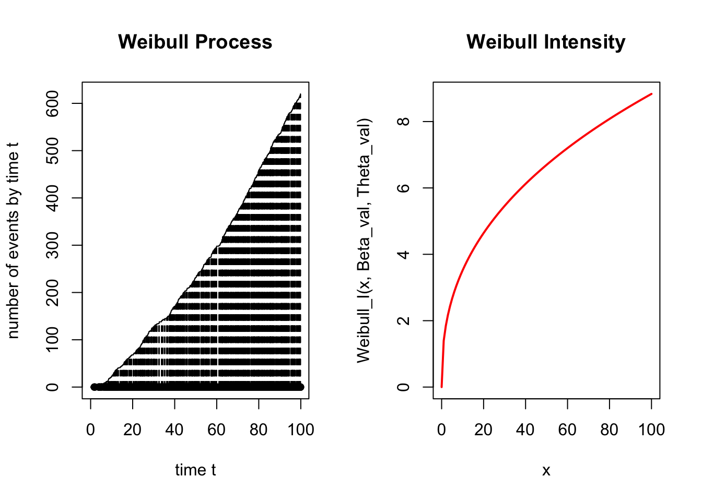
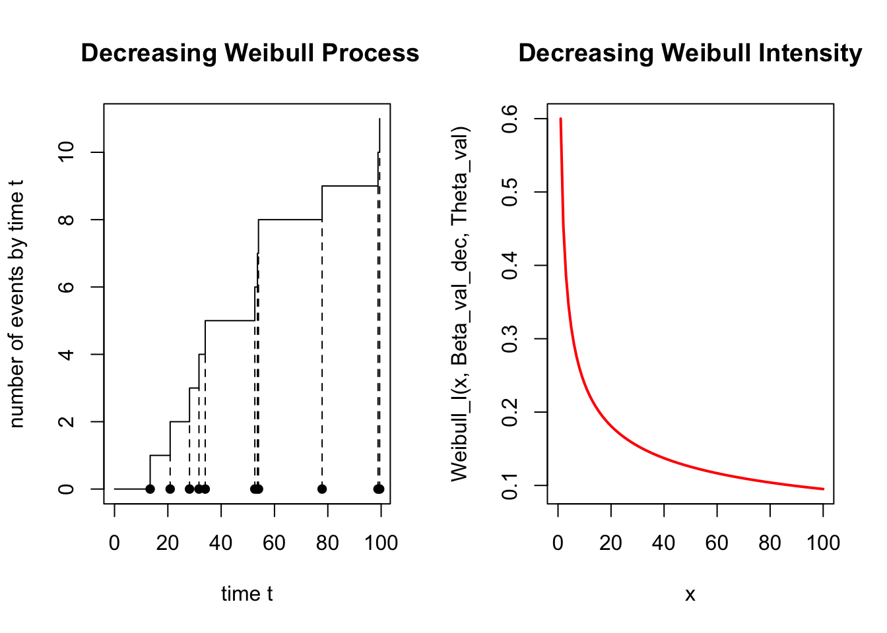
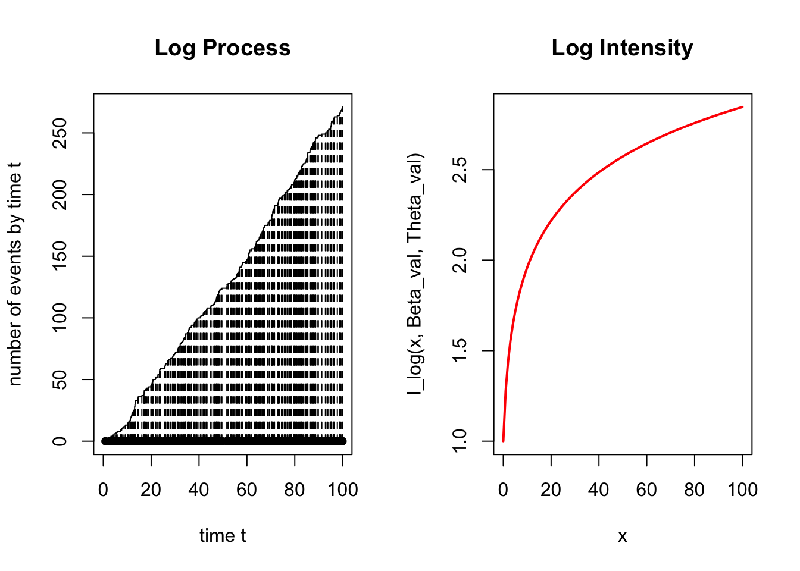
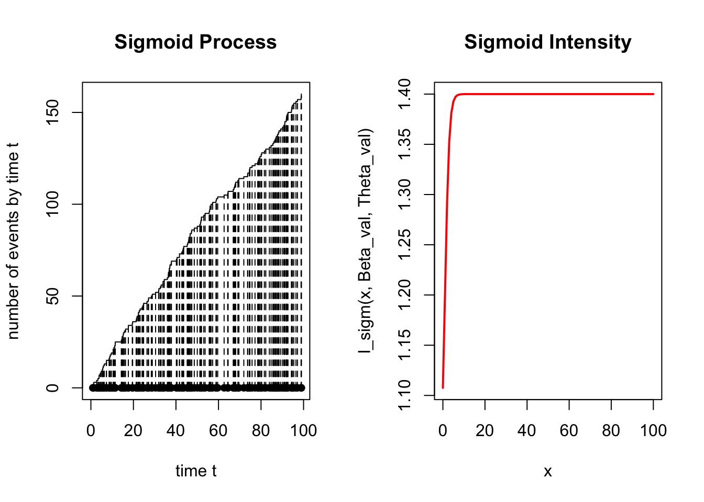
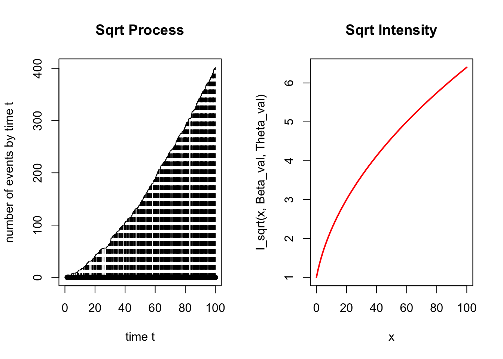
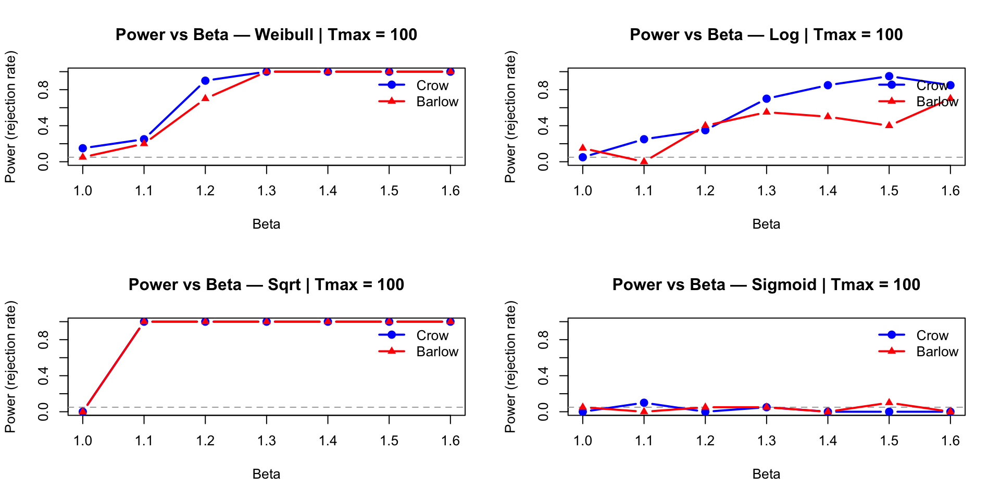
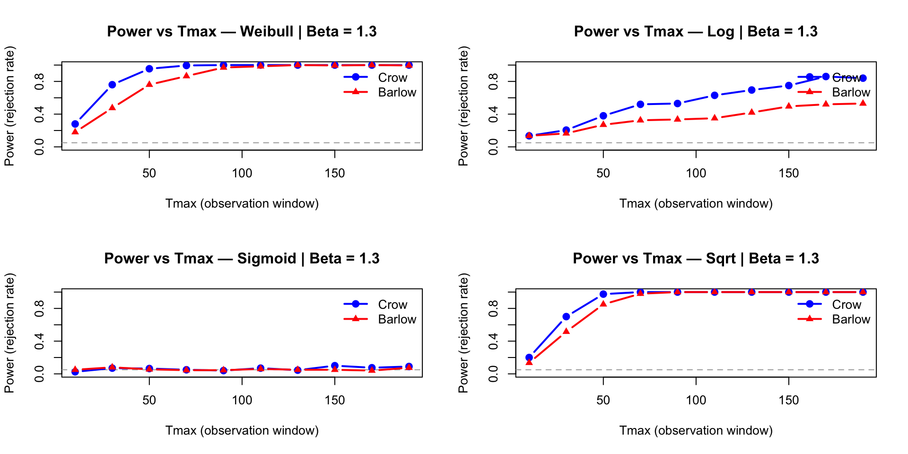
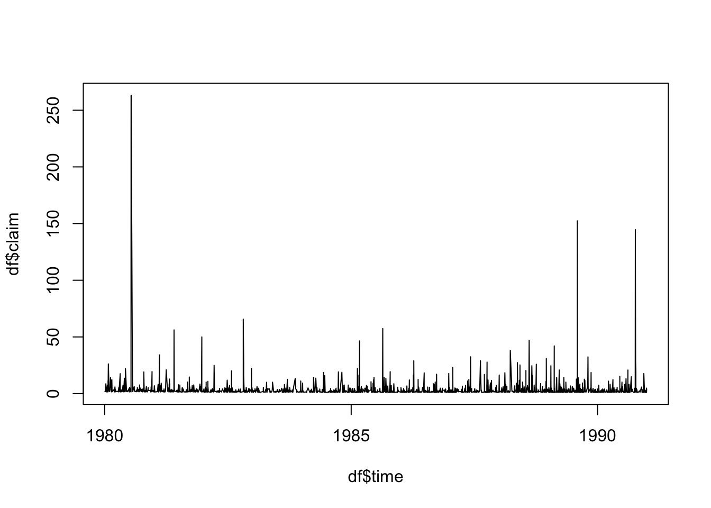
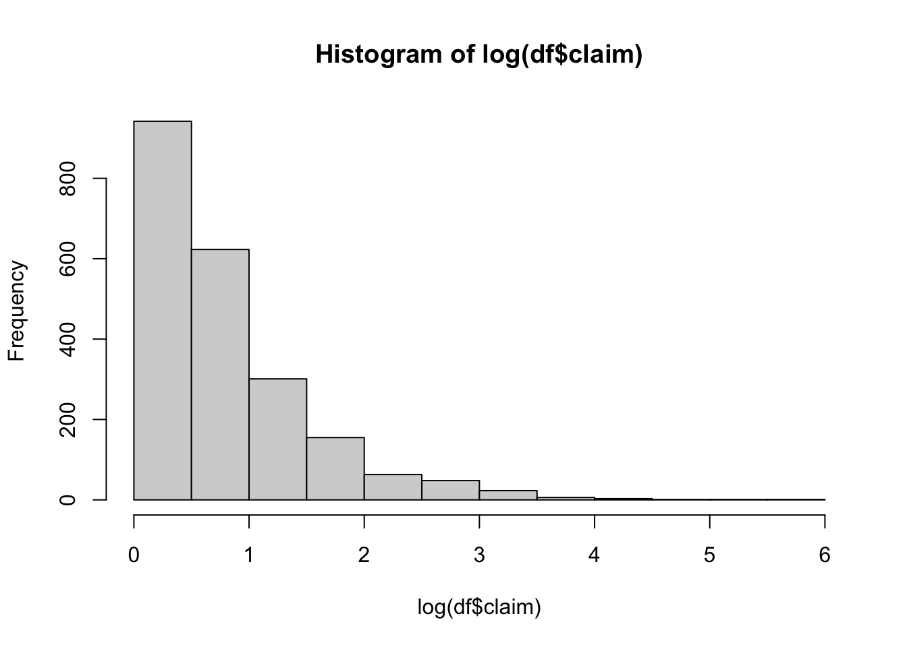
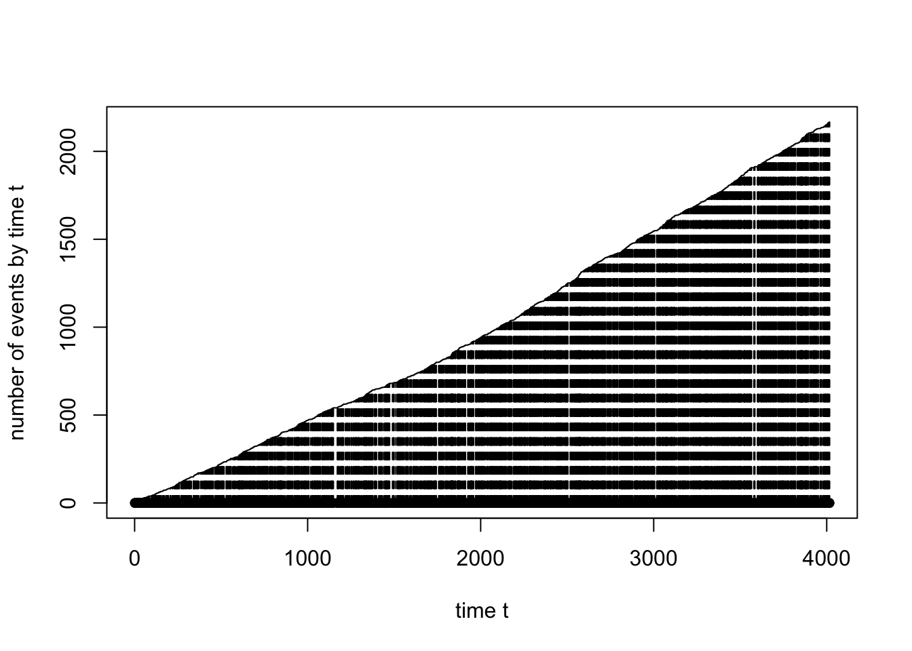

simulHPP <- function(lambda, Tmax) {
N <- rpois(1, lambda * Tmax)
U <- runif(N, 0, Tmax)
return(sort(U))
}Simulation of IHPP for different intensity function
Homogeneity tests for Poisson processes : Crow and Barlow tests
Nonhomogeneous Poisson processes (NHPP) provide flexible models for a variety of physical phenomena, such as system reliability and failure analysis. If a system is repaired to its condition at the time of failure and returned to service, the failures are often modeled by an NHPP.
The objective of this project is to test the null hypothesis of a constant intensity (Homogeneous Poisson Process) against the alternative of an increasing intensity function: * \(H_0: \lambda(t) = \lambda\) (constant intensity) * \(H_1: \lambda(t)\) is a non-decreasing function of \(t\)
We consider a time-truncated framework where the process is observed for \(T^*\) units of time. Given an observed number of failures \(n > 0\), the failure times are denoted by \(0 < T_1 < T_2 < \dots < T_n < T^*\).
In this study, we are going to focus on 2 tests described in the article written by Bain et al. (1985), the Crow and Barlow tests. Firstly, we are going to study the mathematical construction of the 2 tests, then we are going to simulate to tests to check their level and compare their power on both generated and real data.
1. Mathematical construction of the tests
1.1 The Crow Test
The Crow test is a parametric approach designed to test whether a nonhomogeneous Poisson process (NHPP) is homogeneous, specifically against an alternative where the intensity function is a Weibull function: \[\lambda(t) = \frac{\beta}{\theta} \left(\frac{t}{\theta}\right)^{\beta-1}\] where \(\beta > 0\) and \(\theta > 0\).
We therefore want to test the null hypothesis of a constant intensity against an increasing trend: * \(H_0: \beta = 1\) (Homogeneous Poisson Process) * \(H_1: \beta > 1\) (Increasing intensity)
To do so, we use the test statistic \(Z\), as described in the article: \[Z = 2 \sum_{i=1}^{n} \ln\left(\frac{T^*}{T_i}\right)\]
Notation: * \(T^*\) is the total observation time. * \(n\) is the total number of observed failures (with \(n > 0\)). * \(T_i\) are the exact arrival times of the failures, such that \(0 < T_1 < T_2 < \dots < T_n < T^*\).
Mathematical Justification of the Test Statistic
We want to first understand how the distribution of this test statistic is derived under the null hypothesis \(H_0\).
Under \(H_0\), and conditional on \(N=n\) events occurring, the normalized arrival times \(T_i/T^*\) are distributed as the order statistics from a uniform distribution on the interval \([0, 1]\).
Because the sum of logarithms is independent of the ordering of the variables, the sum of the logarithms of these order statistics is strictly equal to the sum of the logarithms of \(n\) independent, unordered uniform variables on \((0, 1)\). Let \(U_i\) represent these independent uniform variables. We can rewrite the core of our statistic using the properties of logarithms: \[\sum_{i=1}^{n} \ln\left(\frac{T^*}{T_i}\right) = \sum_{i=1}^{n} -\ln\left(\frac{T_i}{T^*}\right) \sim \sum_{i=1}^{n} -\ln(U_i)\]
According to the inversion method (often used in Monte Carlo simulations), if \(U_i\) is a uniform random variable on \([0,1]\), its negative natural logarithm follows a standard exponential distribution: \(-\ln(U_i) \sim \text{Exp}(1)\).
Therefore, our sum becomes a sum of \(n\) independent standard exponential variables. The sum of \(n\) independent \(\text{Exp}(1)\) variables follows an Erlang distribution with shape parameter \(n\) and rate parameter 1: \(\text{Erlang}(n, 1)\).
Finally, when we multiply this sum by 2 to construct our statistic \(Z\), we scale the distribution. According to the course lectures, multiplying an \(\text{Erlang}(n, \lambda)\) variable by a constant \(c\) results in an \(\text{Erlang}(n, \lambda/c)\) distribution. Here, multiplying by 2 gives us an Erlang distribution with parameters \(n\) and 1/2.
An \(\text{Erlang}(n, 1/2)\) distribution is mathematically equivalent to a Chi-square distribution with \(2n\) degrees of freedom. This perfectly matches the conclusion found in the article: conditional on \(N=n\), \(Z\) has a \(\chi^2(2n)\) distribution under \(H_0\).
Because an increasing intensity (\(\beta > 1\)) forces the arrival times \(T_i\) to occur later (closer to \(T^*\)), the ratios \(T^*/T_i\) decrease. Thus, the test rejects \(H_0\) for small values of \(Z\).
Therefore, the rejection region is one-sided. We reject the null hypothesis \(H_0\) in favor of an increasing trend if the statistic is strictly less than a critical threshold: \[Z < \chi^2_{\alpha, 2n}\] where \(\chi^2_{\alpha, 2n}\) is the quantile of order \(\alpha\) (the lower tail) of the Chi-square distribution with \(2n\) degrees of freedom, and \(\alpha\) is the chosen significance level.
Conditioning on the Number of Events
While the Crow test is practically applied by conditioning on the observed number of events \(N=n\), we can theoretically evaluate its unconditional properties using the law of total probability.
Assuming the process is observed over a fixed interval \([0, T^*]\) and conditioning on the occurrence of at least one event (\(N > 0\)), the total number of events \(N\) follows a Poisson distribution with expected value \(\Lambda(T^*)\).
The unconditional probability of rejecting the null hypothesis \(H_0\) is the sum of the conditional probabilities of rejection, weighted by the probability of observing exactly \(n\) events: \[P(\text{Reject } H_0) = \sum_{n=1}^{\infty} P(Z < \chi^2_{\alpha, 2n} \mid N=n) P(N=n)\] where \(P(N=n)\) is derived from the Poisson probability mass function.
By definition, the conditional probability of a Type I error is exactly the chosen significance level: \(P(Z < \chi^2_{\alpha, 2n} \mid N=n) = \alpha\). Factoring this constant out of the sum yields: \[P(\text{Reject } H_0) = \alpha \sum_{n=1}^{\infty} P(N=n) = \alpha \times 1 = \alpha\]
We can therefore conclude that the test maintains an unconditional significance level of \(\alpha\), even without conditioning on the number of events.
We will now apply a similar approach to study the construction of the Barlow test.
1.2 The Barlow Test
We now focus on the Barlow test, which evaluates the same hypotheses as previously discussed, but without assuming a specific parametric form (such as the Weibull function) for the intensity.
Recall of the Hypotheses: * \(H_0\): The process is homogeneous (constant intensity). * \(H_1\): The process has an increasing intensity.
The Test Statistic
The premise of this test is that the failure times can be divided into two distinct parts, which gives us the following F-statistic: \[F = \frac{(n-d)T_d}{d(T_n - T_d)}\]
Notation: * \(n\): Total number of observed events. * \(d\): The index chosen to divide the observations. * \(T_d\): The arrival time of the \(d\)-th event. * \(T_n\): The arrival time of the last (\(n\)-th) event.
Mathematical construction of the test statistic
To understand the construction of this test, we must decompose the arrival times \(T_i\), which follow an Erlang distribution, into a sum of \(Y_i\). Here, \(Y_i\) represent the inter-arrival times, which are independent and identically distributed (i.i.d.) exponential variables of parameter 1.
When we calculate \(T_d\), we have a sum of the form: \[T_d = \sum_{i=1}^{d} Y_i\]
When we calculate \(T_n - T_d\), we have a sum of the form: \[T_n - T_d = \sum_{i=d+1}^{n} Y_i\]
If we take the ratio of these two sums and multiply both the numerator and the denominator by 2, we obtain: * In the numerator: a term that follows an Erlang distribution with parameters \((d, 1/2)\). * In the denominator: a term that follows an Erlang distribution with parameters \((n-d, 1/2)\).
This transformation occurs because the sums consist of i.i.d. exponential variables with parameter 1, and according to probability course lectures, multiplying such a sum by 2 divides its rate parameter (\(\lambda\)) by 2.
For this ratio to follow a Fisher distribution, we must divide both the numerator and the denominator by their respective degrees of freedom, which are \(2d\) and \(2(n-d)\): \[F = \frac{\frac{2T_d}{2d}}{\frac{2(T_n - T_d)}{2(n-d)}} = \frac{(n-d)T_d}{d(T_n - T_d)}\]
Ultimately, we obtain the exact statistic \(F\), which by definition follows a Fisher distribution with parameters \(2d\) and \(2(n-d)\) under the null hypothesis.
Under the alternative hypothesis \(H_1\), the test statistic will tend to take large values. Because the intensity is increasing, the early events take longer to occur, causing \(T_d\) to be relatively large and pushing the remaining events closer together.
Consequently, the rejection region is one-sided. We reject the null hypothesis \(H_0\) if the statistic is strictly greater than a critical threshold:\[F > f_{1-\alpha, 2d, 2(n-d)}\] where \(f_{1-\alpha, 2d, 2(n-d)}\) is the quantile of order \(1-\alpha\) of the Fisher distribution of parameter \(2d\) and \(2(n-d)\), and \(\alpha\) is the chosen significance level.
Now that we have studied the mathematical construction of these tests, we are going to perform the simulation.
Generative Functions
For this part we used the functions used in the TP
plot.PP <- function(PP) {
plot(c(0, PP), 0:length(PP), type = "s",
xlab = "time t", ylab = "number of events by time t")
points(PP, 0 * PP, type = "p", pch = 16)
lines(PP, 0:(length(PP) - 1), type = "h", lty = 2)
}simulPPi <- function(lambda_fct, Tmax, M) {
res <- NULL
PPh <- simulHPP(M, Tmax)
if (length(PPh) == 0) return(NULL)
U <- runif(length(PPh), 0, M)
for (i in 1:length(PPh)) {
if (U[i] < lambda_fct(PPh[i])) res <- append(res, PPh[i])
}
return(sort(res))
}Inhomogeneous Poisson Processes
Intensity functions
We define different intensity functions such that for \(H_0 : \beta =1\) the intensity has a constant rate.
Weibull_I <- function(x, beta, theta) {(beta / theta) * (x / theta)^(beta - 1)}
I_sigm <- function(t, beta, theta) {1 + (beta - 1) / (1 + exp(-(t - theta)))}
I_sqrt <- function(t, beta, theta){ (1/theta) * sqrt(1 + (beta - 1) * t / theta)}
I_log <- function(t, beta, theta) {(1/theta) * (1 + (beta - 1) * log(1 + t / theta))}Simulation functions
We now define the function needed to simulate the PP for each intensity function
simulWeibull <- function(beta, theta, Tmax) {
f <- function(t) {Weibull_I(t, beta, theta)}
M_val <- f(Tmax)
return(simulPPi(f, Tmax, M_val))
}
simulLog <- function(beta, theta, Tmax) {
f <- function(t) {I_log(t, beta, theta)}
M_val <- f(Tmax)
return(simulPPi(f, Tmax, M_val))
}
simulSigm <- function(beta, theta, Tmax) {
f <- function(t) {I_sigm(t, beta, theta)}
M_val <- f(Tmax)
return(simulPPi(f, Tmax, M_val))
}
simulSqrt <- function(beta, theta, Tmax) {
f <- function(t) {I_sqrt(t, beta, theta)}
M_val <- f(Tmax)
return(simulPPi(f, Tmax, M_val))
}Simulation and plot
Let’s see !
Beta_val <- 1.4
Beta_val_dec <- 0.6
Theta_val <- 1
Tmax_val <- 100
par(mfrow = c(1, 2))
simW <- simulWeibull(Beta_val, Theta_val, Tmax_val)
plot.PP(simW); title("Weibull Process")
curve(Weibull_I(x, Beta_val, Theta_val), 0, Tmax_val, col = "red", lwd = 2, main = "Weibull Intensity")
par(mfrow = c(1, 2))
simW <- simulWeibull(Beta_val_dec, Theta_val, Tmax_val)
plot.PP(simW); title(" Decreasing Weibull Process")
curve(Weibull_I(x, Beta_val_dec, Theta_val), 0, Tmax_val, col = "red", lwd = 2, main = "Decreasing Weibull Intensity")
par(mfrow = c(1, 2))
simL <- simulLog(Beta_val, Theta_val, Tmax_val)
plot.PP(simL); title("Log Process")
curve(I_log(x, Beta_val, Theta_val), 0, Tmax_val, col = "red", lwd = 2, main = "Log Intensity")
par(mfrow = c(1, 2))
simSg <- simulSigm(Beta_val, Theta_val, Tmax_val)
plot.PP(simSg); title("Sigmoid Process")
curve(I_sigm(x, Beta_val, Theta_val), 0, Tmax_val, col = "red", lwd = 2, main = "Sigmoid Intensity")
par(mfrow = c(1, 2))
simS <- simulSqrt(Beta_val, Theta_val, Tmax_val)
plot.PP(simS); title("Sqrt Process")
curve(I_sqrt(x, Beta_val, Theta_val), 0, Tmax_val, col = "red", lwd = 2, main = "Sqrt Intensity")
Statistical Tests
We now want to implement the Crow and Barlow test presented in the paper.
We added a silent parameter to choose whether we want a text response in the style of t.test.
Even though in such cases it is reasonable to assume (.) is non-decreasing, we add a parameter alternative to study the response of our tests to different alternative :
\(H_1\): The process has an increasing intensity.
\(H_1\): The process has a decreasing intensity.
\(H_1\): The process has a non-constant intensity.
Crow test
testCrow <- function(PP, Tmax, alternative="increasing", silent = FALSE)
{
n <- length(PP)
stat_test_Obs = 2 * sum(log(Tmax / PP))
if (alternative=="increasing"){
p_value <- pchisq(stat_test_Obs, 2 * n)
}else if (alternative=="decreasing"){
p_value <- 1-pchisq(stat_test_Obs, 2 * n)
}else if (alternative=="two-sided"){
p_value <- 2*min(pchisq(stat_test_Obs, 2 * n),1-pchisq(stat_test_Obs, 2 * n))
}
if (!silent) {
print(paste("The Observed Crow Statistic is : ", stat_test_Obs))
print(paste("The p-value : ", p_value))
if (p_value < 0.05) {
print("Conclusion: we reject H0 at level 5%, Beta is greater than 1")
} else {
print("Conclusion: we do not reject H0 at level 5%, Beta could be 1")
}
}
return(p_value)
}Barlow test
testBarlow <- function(PP, Tmax, alternative="increasing",silent = FALSE)
{
n = length(PP)
if (n < 4) return(NA)
d = floor(n/2)
stat_test_Obs = ((n - d) * PP[d]) / (d * (PP[n] - PP[d]))
if (alternative=="increasing"){
p_value <- 1 - pf(stat_test_Obs, 2 * d, 2 * (n - d))
}else if (alternative=="decreasing"){
p_value <- pf(stat_test_Obs, 2 * d, 2 * (n - d))
}else if (alternative=="two-sided"){
p_value <- 2*min(pf(stat_test_Obs, 2 * d, 2 * (n - d)),1-pf(stat_test_Obs, 2 * d, 2 * (n - d)))
}
if (!silent) {
print(paste("The Observed test Statistic is : ", stat_test_Obs))
print(paste("The p-value : ", p_value))
if (p_value < 0.05) {
print("Conclusion: we reject H0 at level 5%, Beta is greater than 1")
} else {
print("Conclusion: we do not reject H0 at level 5%, data suggests Beta could be 1")
}
}
return(p_value)
}Example test execution
Tmax <- 100
set.seed(42)
beta <-1.5
simEx <- simulWeibull(beta = beta, theta = 1, Tmax = Tmax)
print(paste("------ Barlow ------Beta=", beta))[1] "------ Barlow ------Beta= 1.5"testBarlow(simEx, Tmax)[1] "The Observed test Statistic is : 1.71302299493493"
[1] "The p-value : 0"
[1] "Conclusion: we reject H0 at level 5%, Beta is greater than 1"[1] 0print(paste("------ Crow ------Beta=", beta))[1] "------ Crow ------Beta= 1.5"testCrow(simEx, Tmax)[1] "The Observed Crow Statistic is : 1399.72525039115"
[1] "The p-value : 3.89037768804348e-29"
[1] "Conclusion: we reject H0 at level 5%, Beta is greater than 1"[1] 3.890378e-29# Tests with other alternatives
print(paste("------ Barlow Decreasing------Beta=",beta) )[1] "------ Barlow Decreasing------Beta= 1.5"testBarlow(simEx, Tmax, "decreasing")[1] "The Observed test Statistic is : 1.71302299493493"
[1] "The p-value : 1"
[1] "Conclusion: we do not reject H0 at level 5%, data suggests Beta could be 1"[1] 1print(paste("------ Crow Decreasing------Beta=",beta) )[1] "------ Crow Decreasing------Beta= 1.5"testCrow(simEx, Tmax, "decreasing")[1] "The Observed Crow Statistic is : 1399.72525039115"
[1] "The p-value : 1"
[1] "Conclusion: we do not reject H0 at level 5%, Beta could be 1"[1] 1Power Analysis We now want to analyze our test’s power. To do so, we will first see how the tests respond to different values of \(\beta\) and then to different values of \(T_{\max}\).
1. Power as a function of Beta
plot_puissance_beta <- function(simul_func, liste_beta, Tmax, nsimu,
theta = 1, titre = "") {
puissances_C <- numeric(length(liste_beta))
puissances_B <- numeric(length(liste_beta))
for (j in seq_along(liste_beta)) {
b <- liste_beta[j]
rejet_crow <- 0
rejet_barlow <- 0
for (i in 1:nsimu) {
donnees <- simul_func(beta = b, theta = theta, Tmax = Tmax)
if (length(donnees) > 1) {
p_c <- testCrow(donnees, Tmax, silent = TRUE)
p_b <- testBarlow(donnees, Tmax, silent = TRUE)
if (!is.na(p_c) && p_c < 0.05) rejet_crow <- rejet_crow + 1
if (!is.na(p_b) &&p_b < 0.05) rejet_barlow <- rejet_barlow + 1
}
}
puissances_C[j] <- rejet_crow / nsimu
puissances_B[j] <- rejet_barlow / nsimu
}
plot(NULL, xlim = range(liste_beta), ylim = c(0, 1),
xlab = "Beta", ylab = "Power (rejection rate)",
main = paste("Power vs Beta —", titre, "| Tmax =", Tmax))
abline(h = 0.05, col = "darkgrey", lty = 2)
lines(liste_beta, puissances_C, col = "blue", lwd = 2, type = "b", pch = 19)
lines(liste_beta, puissances_B, col = "red", lwd = 2, type = "b", pch = 17)
legend("topright", legend = c("Crow", "Barlow"),
col = c("blue", "red"), lwd = 2, pch = c(19, 17), bty = "n")
}betas_test <- seq(1, 1.6, by = 0.1)
nsimu <- 20
par(mfrow = c(2, 2))
plot_puissance_beta(simulWeibull, betas_test, Tmax = 100, nsimu = nsimu,
theta = 1, titre = "Weibull")
plot_puissance_beta(simulLog, betas_test, Tmax = 100, nsimu = nsimu,
theta = 1, titre = "Log")
plot_puissance_beta(simulSqrt, betas_test, Tmax = 100, nsimu = nsimu,
theta = 1, titre = "Sqrt")
plot_puissance_beta(simulSigm, betas_test, Tmax = 100, nsimu = nsimu,
theta = 1, titre = "Sigmoid")
As we can see, for the Weibull and square root intensity models, both Crow’s and Barlow’s tests are powerful. A small variation in the β value impacts the p-value and the conclusion.
Regarding the sigmoid intensity, neither test performs well. For the logarithmic intensity, Crow’s test is more powerful than Barlow’s though its power is still limited.
2. Power as a function of Tmax (fixed Beta)
plot_puissance_tmax <- function(simul_func, liste_Tmax, beta_fixe, nsimu,
theta = 1, titre = "") {
puissances_C <- numeric(length(liste_Tmax))
puissances_B <- numeric(length(liste_Tmax))
for (j in seq_along(liste_Tmax)) {
Tmax <- liste_Tmax[j]
rejet_crow <- 0
rejet_barlow <- 0
for (i in 1:nsimu) {
donnees <- simul_func(beta = beta_fixe, theta = theta, Tmax = Tmax)
if (length(donnees) >= 4) {
p_c <- testCrow(donnees, Tmax, silent = TRUE)
p_b <- testBarlow(donnees, Tmax, silent = TRUE)
if (!is.na(p_c) &&p_c < 0.05) rejet_crow <- rejet_crow + 1
if ( !is.na(p_b) &&p_b < 0.05) rejet_barlow <- rejet_barlow + 1
}
}
puissances_C[j] <- rejet_crow / nsimu
puissances_B[j] <- rejet_barlow / nsimu
}
plot(NULL, xlim = range(liste_Tmax), ylim = c(0, 1),
xlab = "Tmax (observation window)", ylab = "Power (rejection rate)",
main = paste("Power vs Tmax —", titre, "| Beta =", beta_fixe))
abline(h = 0.05, col = "darkgrey", lty = 2)
lines(liste_Tmax, puissances_C, col = "blue", lwd = 2, type = "b", pch = 19)
lines(liste_Tmax, puissances_B, col = "red", lwd = 2, type = "b", pch = 17)
legend("topright", legend = c("Crow", "Barlow"),
col = c("blue", "red"), lwd = 2, pch = c(19, 17), bty = "n")
}liste_Tmax <- seq(10, 200, by = 20)
beta_fixe <- 1.3
nsimu <- 200
par(mfrow = c(2, 2))
plot_puissance_tmax(simulWeibull, liste_Tmax, beta_fixe = beta_fixe,
nsimu = nsimu, theta = 1, titre = "Weibull")
plot_puissance_tmax(simulLog, liste_Tmax, beta_fixe = beta_fixe,
nsimu = nsimu, theta = 1, titre = "Log")
plot_puissance_tmax(simulSigm, liste_Tmax, beta_fixe = beta_fixe,
nsimu = nsimu, theta = 1, titre = "Sigmoid")
plot_puissance_tmax(simulSqrt, liste_Tmax, beta_fixe = beta_fixe,
nsimu = nsimu, theta = 1, titre = "Sqrt")
We now examine the power as a function of the observation windows. Hence we can see that for Weibull and Squared root intensity, a large observation window is not required for the tests to achieve high power. Consistent with the results for power as a function of β Crow’s test outperforms Barlow’s for the logarithmic intensity. Finally, for the sigmoid intensity the tests remain unreliable regardless of the observation window’s length
In summary, these results suggests that these two tests are primarily effective for smooth intensities with rapid growth.
The sigmoid Function
Crow and Barlow’s tests are designed to assess whether events accumulate progressively faster over the entire observation interval. When the underlying intensity follows a sigmoid shape, the process typically exhibits three phases: an initial flat period, a rapid increase, and a final flat period.
The location of the transition point, denoted by \theta, strongly influences the behavior of the tests:
Small \(\theta\) (early jump): Events are concentrated at the beginning of the interval and become sparse later. This pattern may resemble a decreasing intensity, which can lead the tests to incorrectly reject in the wrong direction.
\(\theta = T_{\max}/2\) (midpoint jump): The signal is mixed, with no clear dominance of either early or late accumulation, making the tests less decisive.
Large \(\theta\) (late jump): The process remains nearly flat for most of the interval, providing little evidence of any trend. As a result, the tests have low power.
Overall, this behavior shows that Crow and Barlow’s tests implicitly rely on the assumption of a globally and smoothly increasing intensity. They are therefore sensitive to the shape of the alternative and may perform poorly when the true intensity deviates from this assumption.
par(mfrow = c(2, 2))
plot_puissance_beta(simulSigm, betas_test, Tmax = 100, nsimu = nsimu,
theta = 1, titre = "Sigmoid, Theta = 1")
plot_puissance_beta(simulSigm, betas_test, Tmax = 100, nsimu = nsimu,
theta = 50, titre = "Sigmoid, Theta = 50")
plot_puissance_beta(simulSigm, betas_test, Tmax = 100, nsimu = nsimu,
theta = 100, titre = "Sigmoid, Theta = 100")
TEST ON THE DANISH FIRE INSURANCE CLAIMS DATA SET
Now we are going to apply these homogeneity tests to the large fire insurance claims in Denmark from 1980 to 1990. First, we need to extract the dates of each observation from the danish dataset from the evir R-package, and create a Poisson Process from the data.
library(ismev)Le chargement a nécessité le package : mgcvLe chargement a nécessité le package : nlmeThis is mgcv 1.9-3. For overview type 'help("mgcv-package")'.library(evd)
library(tseries)Warning: le package 'tseries' a été compilé avec la version R 4.5.2Registered S3 method overwritten by 'quantmod':
method from
as.zoo.data.frame zoo library(evir)
Attachement du package : 'evir'Les objets suivants sont masqués depuis 'package:evd':
dgev, dgpd, pgev, pgpd, qgev, qgpd, rgev, rgpddata(danish, package = "evir") # We load the dataset from the evir package
df<-data.frame(time = attr(danish,"times"),
claim = as.numeric(danish)) # We create a dataframe with two columns : one with the times of each claim in the format "YYYY-MM-DD HH:MM:SS" and the second one with the amount of the claimExploratory analysis
We visualize our dataset and we apply some transformation to it to help the visualization and normalize it.
summary(df$claim) Min. 1st Qu. Median Mean 3rd Qu. Max.
1.000 1.321 1.778 3.385 2.967 263.250 plot(df$time, df$claim, type ="l")
hist(log(df$claim))
head(df) time claim
1 1980-01-03 01:00:00 1.683748
2 1980-01-04 01:00:00 2.093704
3 1980-01-05 01:00:00 1.732581
4 1980-01-07 01:00:00 1.779754
5 1980-01-07 01:00:00 4.612006
6 1980-01-10 01:00:00 8.725274We extract a Poisson process from our dataset by subtracting the dates to get the inter-arrival times. We then create our Poisson process by the cumulative sum of the inter-arrival times
df$delta_t <- c(NA, as.numeric(diff(df$time), units = "days"))
df[1,3] <- 0
df["new_times"]<- 1+ cumsum(df$delta_t)
head(df) time claim delta_t new_times
1 1980-01-03 01:00:00 1.683748 0 1
2 1980-01-04 01:00:00 2.093704 1 2
3 1980-01-05 01:00:00 1.732581 1 3
4 1980-01-07 01:00:00 1.779754 2 5
5 1980-01-07 01:00:00 4.612006 0 5
6 1980-01-10 01:00:00 8.725274 3 8PP <- df$new_times
Tmax <- max(PP)
plot.PP(PP)
Statistical Test on the dataset
We can now apply the Barlow and Crow test on the Poisson Process we extracted from the data.
print("------Barlow------")[1] "------Barlow------"testBarlow(df$new_times,Tmax)[1] "The Observed test Statistic is : 1.27782279424543"
[1] "The p-value : 6.04298144857296e-09"
[1] "Conclusion: we reject H0 at level 5%, Beta is greater than 1"[1] 6.042981e-09print("------Crow------")[1] "------Crow------"testCrow(PP,Tmax)[1] "The Observed Crow Statistic is : 3898.50957058287"
[1] "The p-value : 6.59452174464161e-07"
[1] "Conclusion: we reject H0 at level 5%, Beta is greater than 1"[1] 6.594522e-07Both tests reject the null hypothesis at level 5% : we conclude that the intensity function is not constant : the frequency of large fire insurance claim most likely increased between 1980 and 1990.
Conclusion:
In conclusion, this project has successfully established the mathematical and numerical framework for the Crow and Barlow homogeneity tests. Our simulation results are entirely consistent with the power studies conducted by Bain et al. (1895), demonstrating that the tests maintain their prescribed significance levels under the null hypothesis while exhibiting high power against various alternatives. The reliability of these numerical implementations confirms that our model is robust for analyzing trend data in Poisson processes and aligns perfectly with established literature.
The application of these tests to the historical dataset of large fire insurance claims in Denmark from 1980 to 1990 revealed a statistically significant increasing trend in event intensity. This observed “wear-out” effect in the frequency of major fires raises important environmental questions, as the acceleration of such claims could potentially be linked to the early manifestations of global warming and its impact on fire risk. These findings underscore the practical value of using Nonhomogeneous Poisson Processes (NHPP) to monitor and quantify real-world changes in environmental risks.
Furthermore, we expanded the scope of our study by testing the framework against the alternative hypothesis of a decreasing intensity function. This additional analysis proved successful, showing that the methodology is versatile enough to detect not only deterioration but also improvements in system reliability or a reduction in event frequency. This flexibility ensures that the Crow and Barlow tests are comprehensive tools for trend analysis in any direction.
References
Bain, L. J., Engelhardt, M., & Wright, F. T. (1985). Tests for an Increasing Trend in the Intensity of a Poisson Process: A Power Study. Journal of the American Statistical Association, 80(390), 419-422.